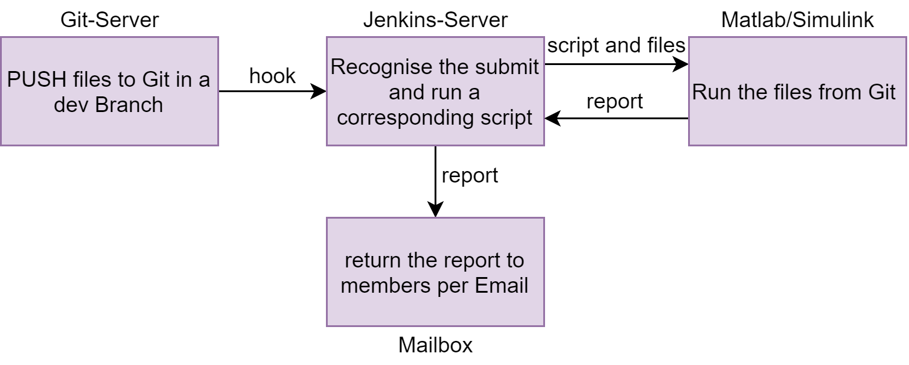
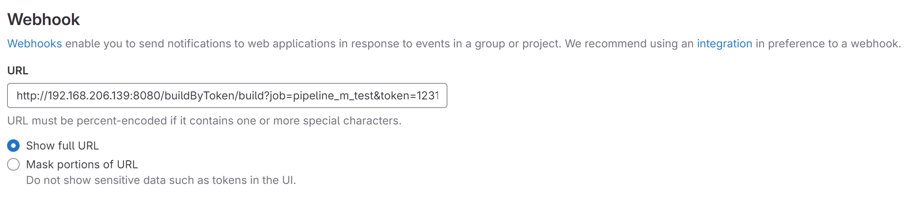
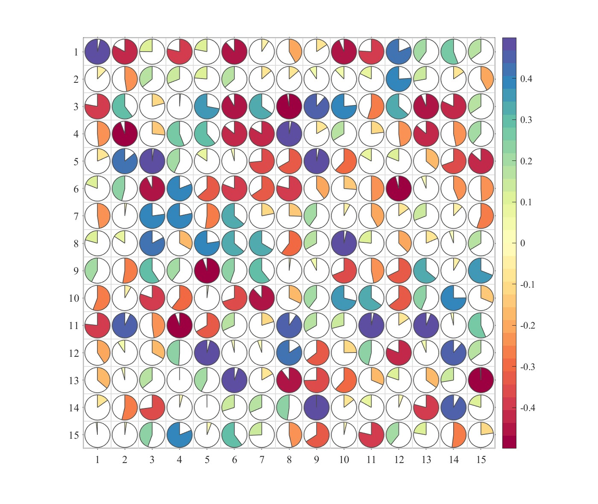

From Jenkins to Matlab/Simulilnk
Tutorial of Jenkins
Workflow from Jenkins to Git & Matlab/Simulink
Project`s structure
This Project contains 3 Parts: Git, Jenkins and Matlab/Simulink (working environment):
- Push new project file (
.mfrom Matlab or.slxfrom Simulink) to the current dev branch to Git (here we use Gitlab). - Jenkins find and recognise this submit with a tool named Hook, then responce to this with running specified Scripts (based on shell, Python u.s.w.) to call the submitted project files.
- After finishing executing the project files, generate a report return it to the group members per Email.

Configuration of Gitlab
A Server of Git deployed in private Cloud Plattform promotes teamwork and information security.
For development one Project of Gitlab should contain several brachs, one for stable release (main branch) and others for development and test, until they are finished and then merged.
Some commonly used commands if you deploy the Gitlab in local Linux server:1
2
3
4gitlab-ctl status # check current working state
gitlab-ctl start
gitlab-ctl restart
gitlab-ctl stop
Then add a webhook under path of the corresponding project.

The URL here is generated by Jenkins, in part of trigger for remote build. You can give it a self defined token for a specified project. The Format of this url should be:1
JENKINS_URL/buildByToken/build?job=NAME&token=SECRET
Here we use here a plugin named Build Authorization Token Root to skip Authorization when a third party server wants to trigger this webhook (gitlab).
Configuration of Jenkins
Things to note are, to drive Matlab/Simulink with Jenkins`s plug-in, the Jenkins should be deployed in the same server of Matlab/Simulink. Because implementing this process with Scripts in Pipeline of Jenkins could be easier than that with calling shell script to drive Matlab/Simulink installed in another server. But of course this depends on specified demands.
In this Tutorial, Pipeline of Jenkins will be used to drive Matlab/Simulink to run the project file and return the results. So both Software will be installed in a same server.
List of some necessary dependencies in Jenkins before you wanna follow this tutorial:1
2
3
4
5
6
7Matlab, # Matlab plugin in Jenkins
Blue Ocean, # pipeline plugin
Pipeline,
SSH server, # ssh communication
Publish Over SSH,
Build Authorization Token Root # help using trigger without authorization (login)
...
The Matlab plugin provides you with three build steps, for Pipeline:
- To run a MATLAB build using the MATLAB build tool, use the
runMATLABBuildstep. - To run MATLAB and Simulink tests and generate artifacts, use the
runMATLABTestsstep. - To run MATLAB scripts, functions, and statements, use the
runMATLABCommandstep.
For test files, use the runMATLABTests step in your pipeline to run MATLAB and Simulink tests and generate test and coverage artifacts. By default, the plugin includes any test files in your MATLAB project that have a Test label. If your pipeline does not use a MATLAB project, or if it uses a MATLAB release before R2019a, then the plugin includes all tests in the root of your repository and in any of its subfolders.
You can easily call each step with given examples in Pipeline Script generator.
Script in Pipeline
This example uses runMATLABTests command to test several files in current path of Jenkins (.jenkins/workspace/
Precondition: SIMULINK TEST Package in MATLAB is already installed.
For Simulink files you wanna run, make sure it is a Test Simulink project with test Harness. Reference: https://de.mathworks.com/help/sltest/gs/create-a-simple-baseline-test.html
1 | pipeline { |
Note: By default, when you use the runMATLABBuild, runMATLABTests, or runMATLABCommand step, the root of your repository serves as the MATLAB startup folder. To run your MATLAB code using a different folder, specify the -sd startup option or include the cd command when using the runMATLABCommand step.
Here the credentials infomation should be stored in Jenkins`s configuration in advance. And after the last stage it’s available for user to add another additional stage to send a eamil included status and generated report/files.
Check official documents for more details: https://github.com/mathworks/jenkins-matlab-plugin/blob/master/CONFIGDOC.md
Test
This Example project contains 2 Scripts:1
2
3└─Script
plot_test.m
SHeatmap.m
They are all included in a Matlab Project. The file plot_test.m is the file which need to be tested. It calls SHeatmap.m and saves a Heatmap after running in current path.

Use the Script showing above, check processing with Blue Ocean (a Pipeline Plugin of Jenkins, which is for real-time monitoring of current operation status):

And check the output in Console Window:
1 | ... |
Check the path in Jenkins`s directory:
1 | chenyan@test-server:~/.jenkins/workspace/pipeline_m_test/matlab_test/Script$ ls |
Sucessfully generate a jpg image under the path of script.
Check then the report:1
2
3
4.
├── testResultsJUnit.xml
├── testResultsPDF.pdf
└── testResultsTAP.tap
Sucessfully generate report with 3 different types (optional).